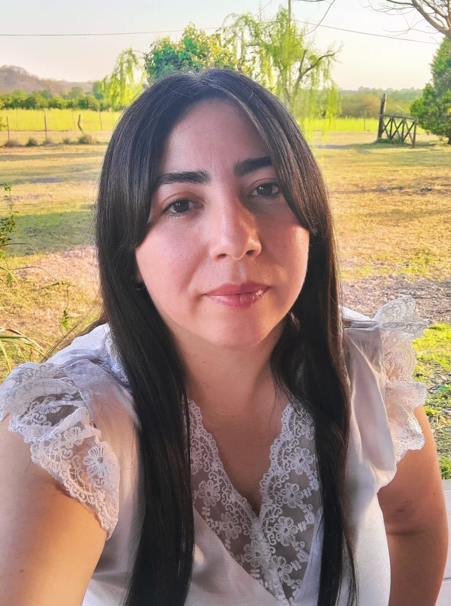

Estudiante de programación
Soy estudiante del último año de la Tecnicatura en Programación en la UTN. Trabajo como administrativa y actualmente me estoy formando en desarrollo web con HTML y CSS.
Municipalidad de Las Talitas | 2024 - Actualidad
Gestión de datos, atención al cliente y organización de documentos. Uso de herramientas digitales y resolución de problemas administrativos.
Estudiante | 2025 - Actualidad
Desarrollo de páginas web utilizando HTML y CSS. Creación de estructuras, diseño responsive y estilos modernos.
Desarrollo de mi portafolio web utilizando HTML y CSS. Incluye diseño moderno, secciones organizadas y estilo responsive.
UTN (Universidad Tecnológica Nacional) | En curso
Actualmente cursando el último año de la carrera. Formación en desarrollo web, lógica de programación y bases de datos.